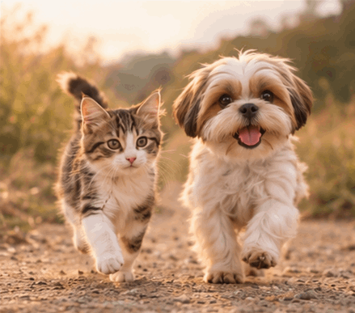
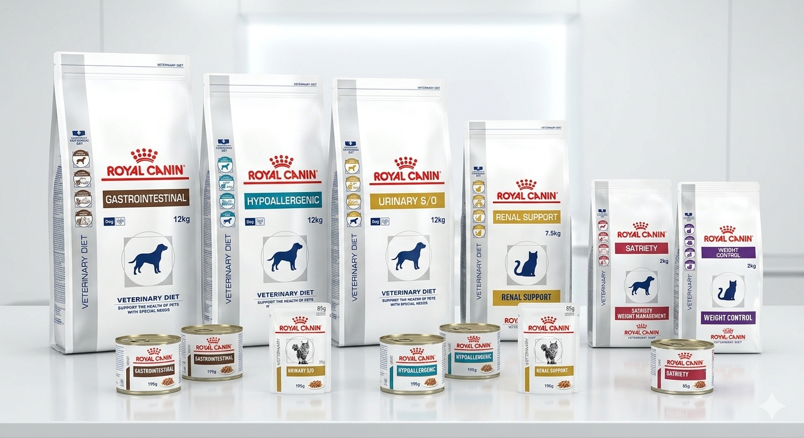

Conheça a Royal Canin
A Royal Canin é uma empresa especializada na produção de alimentos para cães e gatos. Seu objetivo é promover a saúde e o bem-estar dos animais por meio de uma nutrição equilibrada e desenvolvida com base em pesquisas científicas. Seus produtos são adaptados às necessidades de cada pet, considerando fatores como raça, idade, porte e condições de saúde.
Seu objetivo é contribuir para uma vida mais saudável por meio da nutrição.
Site oficialNossa análise de dados
Desenvolvemos como conhecimento uma pesquisa quantitativa sobre a produção de rações da empresa destacada.


Por que a Royal Canin?
Conhecimento, pesquisa e cuidado com a saúde animal.

Acesse a nossa pesquisa qualitativa com a empresa!
Conheça mais sobre a Royal Canin e descubra suas soluções nutricionais.
Acesse nosso site